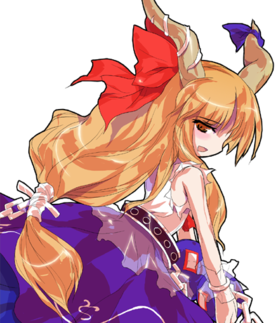
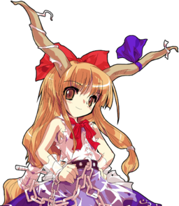
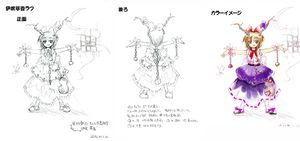

- Welcome to Touhou Wiki!
- Please register to edit. For assistance, check in with our Discord server or IRC channel.
Suika Ibuki
Suika Ibuki iβɯᵝki sɯᵝika̠ (♫) | |
|---|---|
|
 Suika in Scarlet Weather Rhapsody Tiny Night Parade of One Hundred DemonsMore Character Titles | |
| Species | |
| Abilities |
Manipulation of density and sparseness |
| Location |
Somewhere in Gensokyo (Commonly seen around Youkai Mountain, Heaven and the Hakurei Shrine). Used to live in Ancient City |
Music Themes | |
| |
Appearances | |
| Official Games | |
| |
| Print Works | |
| |
| Music CDs | |
| |
Suika Ibuki (伊吹 萃香 Ibuki Suika) is the main antagonist of Immaterial and Missing Power. She's a typical oni that loves drinking and fighting. Just as the folktales say, she has two horns on her head that symbolize her oni heritage, and enough physical strength to throw large boulders single-handedly.
General Information[edit]
Suika chiefly appears in the spin-off game installments of the Touhou Project, such as Immaterial and Missing Power and Scarlet Weather Rhapsody. Her only appearance in a main game is appearing as a support character for Reimu Hakurei in Subterranean Animism.
It is unknown exactly where she is living currently. In many endings of Immaterial and Missing Power, she is shown spending her time at the Hakurei Shrine, but in Perfect Memento in Strict Sense, it says she is mainly active around the Youkai Mountain, and when visiting it during the events of Scarlet Weather Rhapsody, she comments on how nostalgic it feels. In Strange and Bright Nature Deity she is shown to be coming and going between Gensokyo and the country of oni in the Underworld. She was last seen at the end of her route in Scarlet Weather Rhapsody, having defeated Tenshi Hinanawi in battle and spending some time after that in Heaven.
Personality[edit]
Her personality is jolly and quite childish, as you would expect from her appearance. Despite her childlike exterior, however, she possesses great amounts of raw power. She loves drinking and is frequently seen in the fighting games drunk; she claims she's been drinking sake for some hundreds of years now.[1]
Suika bears the typical personality traits of most oni, valuing strength and fair play while despising dishonesty and cowardice. However, she is apparently slightly less honest than a typical oni. In addition, she doesn't kidnap humans, which is known to be the "strongest bond of trust" between oni and humans. However, she is nonetheless quite honest.[2]
Though she is generally a happy-go-lucky oni, as one of the most powerful youkai in Gensokyo, she can be very observant. In addition, she is seen being very critical of others in Immaterial and Missing Power, such as by calling Alice Margatroid a coward and telling Youmu Konpaku how people make fun of her.
Ability & Strength[edit]
Suika, more than the abnormal strength of an oni, possesses super-strength. Aya Shameimaru, who has probably seen or heard of nearly every youkai by now, once referred to Suika as "simply the most powerful youkai in Gensokyo". That doesn't mean there aren't others that could be nearly equal to her power, but she is still thought of as the strongest/most powerful youkai in Aya's opinion. Of course, this may be because she is a tengu, who were once subordinate to the oni. At the time of Silent Sinner in Blue, among the people that Reimu Hakurei knows, it seems that she had the greatest super-strength, but she admits that Yuugi Hoshiguma might be (physically) stronger than she is.[3] She once uttered "in my swarm of pandemonium, in the forgathering of oni, no mere human or youkai can withstand!"
- Manipulation of density and sparseness
Suika's ability to manipulate "density" gives her the power to control the density of any given object; to put it simply, assembly and dispersion. As the object's density increases, it heats up, and as it decreases, it turns into a mist.[4] During her spell cards and other attacks, she can also create smaller versions of herself and make herself giant. She can also decrease her own body's density to become a mist, as she did during the events of Immaterial and Missing Power, making it impossible to attack her.[5] By doing this all over Gensokyo, she can effectively keep an eye on everything going on. She can also gather things without shape, like people's souls, which caused the incident in the first place. She has also affected the Moon as reflected in sky (the canopy) to make it explode, then take the falling fragments and turn them into mist as well,[1] but the details as to how are unknown. Youmu Konpaku, after striking her with one of her swords, commented that the sword itself reacted strangely.[6]
With this power, she was able to assemble the thoughts of people and youkai, and made the residents of Gensokyo periodically have a party. Furthermore, with this power she is able to split up into small pieces and become a giant, and she is also able to disperse into the atmosphere. Other than that, she is able to compress her attack and increase her power, and is able to draw the opponent into something like a black hole, and sucking the opponent's power, out of nowhere she assembles rocks and health, and the way she throws it can be seen. It seems like she is able to turn a mountain into sand by this power (according to Immaterial and Missing Power). During her mystery attacks on Myouren Temple in Wild and Horned Hermit chapter 9, she was capable of one-hit knockouts without being seen.
Unbelievably, in her last spell in Immaterial and Missing Power's story mode, "Pandemonium" or "A Million Oni Parade the Night," her spell gauge and her health gauge disperse, making an unthinkable system-intervention model for its usage method.
Possessions[edit]
Suika has a gourd that she calls the Ibuki Gourd, which has been soaked in the extract of a sake bug, making it capable of turning water into sake.[7] To prevent it from overflowing, the gourd has a stopper on it, and she can't pour out more than the gourd will hold at one time.[8]
Backstory[edit]
Before appearing in Gensokyo, Suika lived in the Underworld. However, before even that, she apparently lived on the Youkai Mountain as one of the four "Devas of the Mountain", along with Yuugi Hoshiguma and two others. Since the oni were superior to the other residents of the mountain, such as the tengu and kappa, they all still remember her even now as someone to be respected.[9]
Background Information[edit]
Origin[edit]
Suika is most likely based off of Shuten-douji. Shuten-douji was a man who lived a half-youkai existence, with an existence between that of a human and Yamata no Orochi, known as one of the Three Great Evil Youkai of Japan (日本三大悪妖怪) alongside Tamamo-no-Mae and the tengu form of Emperor Sutoku. In the prefectural border between Gifu Prefecture and Shiga Prefecture was Mount Ibuki, which was his birthplace. Furthermore, in the Otogizooshi Shuten-douji is said to have been abandoned after birth at the foot of Mt. Ibuki, and to have been previously been known as 伊吹童子 (Ibuki-douji).
Mt. Ooe was a mountain that extended over Fukuchiyama, Miyazu, and Yosano, Kyoto. It was once a mine heavily mined for copper, nickel, and chromium. There is a legend where the aforementioned Shuten-douji and his subordinates were exterminated, and in fact, completely massacred, and in the town centre of Oe, near the Oe Station (Kitakinki Tango Railway), there are many associated images, Onigawara, mozaic images, and other things like that lined up. One of her Scarlet Weather Rhapsody spell cards, "Complete Massacre on Mt. Ooe" probably comes from this.
Among Shuten-douji's subordinates, among the especially powerful "big four," there was one oni by the name of "Hoshikuma-douji." This is where the name of Suika's ally from the big four, Yuugi Hoshiguma, comes from. Furthemore, according to the legend, Ibaraki-douji (on whom Kasen Ibaraki is based) was a subordinate or even lover of Shuten-douji. Within the Touhou setting, Kasen and Suika's relationship is as of yet unknown.
Name[edit]
Her full name is Suika Ibuki (伊吹 萃香). Her first name Suika (萃香) is not a legitimate Japanese word, but literally it can be translated as "gathering fragrance". Incidentally, suika (スイカ/西瓜/水瓜) is the word for watermelon in the Japanese language (in common Japanese, the pitch accent for "watermelon" is flat. In order to distinguish, native speakers pronounce her name as "Su*[high] i*[high] ka*[low]"). Her last name Ibuki (伊吹) can mean Chinese Juniper in Japanese, but in her case, it's highly likely to be a reference to Mount Ibuki (伊吹山 Ibuki-yama) the place where Shuten-douji supposedly was born. In addition, Shuten (酒呑) means "alcohol drink".
Design[edit]
Suika has two long straight oni horns on her head, decorated with ribbons. She wears a tattered pale pink blouse, a long purple and pink skirt, and three chain accessories tied to her belt. Her eyes are brown.
The three symbols are related to Gibon Sengai's Picture "Circle, Triangle, Square" (or Three Dimensions of Somatic Attunement). This picture is so esoteric that there are several interpretations on it, but the significane of the three diagrams would be mentioned by Rinnosuke Morichika in Chapter 22 of Curiosities of Lotus Asia.
Though fighting games sprites represent her with blonde/light brown hair, it must be considered as an error; Suika's real hair color actually being ginger (orange) according to Alphes' artworks and ZUN's artworks and sprites.
Suika's Appearances[edit]
Games[edit]
- Immaterial and Missing Power
- Main article: Immaterial and Missing Power Story
During the events of Immaterial and Missing Power, the people of Gensokyo were manipulated into having feasts repeatedly, one right after another, by Suika's ability to "gather" anything. She intended to draw all the other oni out of hiding with continuous, non-stop celebration. Her motive for this was the short spring in Perfect Cherry Blossom and the lower number of flower viewings that could be held because of it.
In most characters' scenarios, Suika was defeated and the number of feasts began to decrease. In Suika's scenario, she managed to defeat all of her major foes in a feast, but her plan failed anyway due to Reimu Hakurei's ability and her own short-comings as an oni.
- Shoot the Bullet
In Shoot the Bullet, Aya Shameimaru encountered Suika on the Extra stage and took photos of her danmaku, being the first shoot 'em up game Suika appears in.
- Scarlet Weather Rhapsody
- Main article: Scarlet Weather Rhapsody Story
In Scarlet Weather Rhapsody, she notices that temperaments are being gathered from everyone into the sky, so she decides to climb up the Youkai Mountain to follow them. Once she reaches the heavens, she locates the perpetrator. Instead of trying to put an end to whatever plot was going on, Suika demands a living space in the heavens. She later gathers everyone to the heavens to attack Tenshi Hinanawi, although whether it was to punish the celestial or just to pass the time is unclear.
- Subterranean Animism
- Main article: Subterranean Animism Story
- Touhou Hisoutensoku
- Main article: Touhou Hisoutensoku Story
If connecting SWR with Touhou Hisoutensoku, then Suika can become a selectable character to play with, although she appears in no scenarios.
- Double Spoiler

In Double Spoiler, Suika appeared as a stage 6 target, where she uses a few spell cards and had Aya Shameimaru and Hatate Himekaidou take photos of her and her danmaku.
- Hopeless Masquerade
Suika made a background cameo appearance in Hopeless Masquerade on the Human Village stage. She is seen standing on a balcony of the tavern with Yuugi Hoshiguma, drinking beer.
- Impossible Spell Card
- Main article: Impossible Spell Card: Story
After apparently reading the newspaper by the tengu about a mischief-making amanojaku, Suika becomes one of the many strong youkai and humans to try and stop Seija Kijin. She uses spell cards that are considered impossible to dodge.
Literature[edit]
- Bohemian Archive in Japanese Red
- Main article: Bohemian Archive in Japanese Red/Suika
Aya Shameimaru realizes that the Moon has exploded late one midwinter night and goes to interview the person responsible, Suika Ibuki. Suika is drunk, but she manages to tell Aya that she did it as a threat to all those who were partying, reminding them of onis by shattering the sky, a proof of their awesome strength by splitting the sky apart so easily to blow up the Moon.
During the follow interview, Suika challenges Aya to a drinking match even as she asks her for sake. Aya seems to accept and invites Suika to drink with her at a nearby food cart, with hilarious results as Suika talks about silencing the poor owner. Aya then mentions her surprise at Suika and the onis being back. Suika responds that she is the only one, and she's come back only for a while. She also tells Aya how sad she is that the tengu have lost most of their influence. Suika finishes by accusing the tengu of not showing their strength and Aya ends the discussion by inviting Suika to drink about gathering news for her.
- Strange and Bright Nature Deity
In Chapter 17 and 18, Suika gives a jug with a sake bug in it to Reimu Hakurei. However, it's soon stolen by the Three Fairies of Light, who replace it with a fake. The real jug is later taken to Eientei for analysis, and when Suika returns to the shrine, they find that the jug no longer contains the bug. She is not particularly concerned at it, however, and proceeds to explain to Reimu and Marisa Kirisame what it does.
- Wild and Horned Hermit
In the end of Chapter 9, Suika is revealed to be the culprit behind the strange attacks that have been happening lately, especially in and around the Myouren Temple. She eventually went to the shrine hoping to see Kasen Ibaraki, but she disappears before they meet. She reappears at the end of Chapter 16 for the same purpose, having received a tip from Yuugi Hoshiguma, and thinks to herself that Kasen doesn't need to keep hiding, and that she hasn't seen her in a long time.
Relationships[edit]
Yuugi Hoshiguma[edit]
Suika and Yuugi Hoshiguma were two of the four devas of the mountain, and are very good friends, although it's been a while since they've actually seen each other before Subterranean Animism. Of course, their reunion during that time was not in person, but instead Suika watching Yuugi through a TV screen and talking to her using Yukari's cell phone. Suika hopes the four of them can go mountain climbing again, some day. They've been seen hanging around together in the background of the Human Village of Hopeless Masquerade.
Yukari Yakumo[edit]
Yukari Yakumo was Suika's friend before the oni went to the Underworld. It is unknown how or when they became friends. Yukari cares about Suika, as her (hypothetical) Immaterial and Missing Power story has her stop Suika because she's worried that people will find Suika whom won't be as forgiving as Yukari is. Suika does favors for Yukari, such as rebuilding the Hakurei Shrine in Scarlet Weather Rhapsody or going along with her scheme in Subterranean Animism. The two play danmaku battles with each other, though it's been a while since the last one before Scarlet Weather Rhapsody. In Oriental Sacred Place Chapter 12, Yukari is with Suika at the Hakurei Shrine New Year's Festival.
Suika (an oni) does tend to get annoyed with Yukari's "dirty tricks", but doesn't go beyond snapping that they're dirty. Suika referred to Yukari's existence as fraudulent to Youmu Konpaku in Immaterial and Missing Power, and stated to Yukari that it was rare to see her "on this side of the world" in broad daylight in Scarlet Weather Rhapsody. These may be simple figures of speech, or they may show that Suika knows many deeper things about Yukari.
Reimu Hakurei[edit]
Reimu Hakurei's honesty in Immaterial and Missing Power impressed the oni when they first met. The oni now drops by the shrine often. Reimu usually has Suika pick up garbage. Once Suika even gave Reimu a sake bug as a gift so they could drink quality sake together (unfortunately, a series of events resulted in the worm being lost). She has teamed up with Reimu to go along with Yukari's scheme in Subterranean Animism.
Minor relationships[edit]
Suika travelled up to Heaven and beat up Tenshi to get some land. Iku mentions in her ending that Tenshi must have gave it to her without consulting any of the other celestials about the matter. Since then, Suika played at least one prank on Tenshi by gathering up many others to come fight her. Tenshi initially figured that it'd be okay because Suika will get bored and leave heaven soon, but by the time the final story (Tenshi's) in Scarlet Weather Rhapsody ends. Suika's still up there, causing Tenshi to worry about just how long the oni plans on staying.
Iku first encounters Suika when Suika is climbing to Heaven to see someone, where she tested Suika before allowing Suika to move on. Suika won, surprising Iku with her power. Iku later runs into Suika while searching for Tenshi Hinanawi to file a report on earthquakes. The oni requests Iku play with her for a bit and fights Iku in a duel. Iku is extremely confused why the oni is still in Heaven, but had to get back to her job. Eventually, after a long string of being attacked by various residents of Gensokyo for no reason whatsoever and an infuriating meeting with Tenshi, the poor exhausted oarfish arrives back in heaven and runs into the oni again. Suika's story of Tenshi giving her land gets the oarfish even more exasperated at the celestial, and Suika cheerfully comforts her and pours her a drink, encouraging Iku to vent her complaints to the oni. It is unknown if they became friends after that or not.
After the events of Immaterial and Missing Power, Patchouli seems to have developed a bit of an obsession with taking down the oni, although the feeling isn't mutual. She now has the Scarlet Devil Mansion host Setsubun (basically an anti-oni festival) every year, despite how none of the other residents like it (the fried beans burn the mistress, and the fairy maids hate cleaning up afterwards). Suika has taken note of this and in retaliation to the first festival, destroyed the moon as a display of her own power (actually only an image of the moon, by shattering the heavens to do it). It is unknown if residents of the Scarlet Devil Mansion noticed.
In Scarlet Weather Rhapsody, Patchouli goes right past Tenshi Hinanawi (the real culprit, quite confused) to attack Suika, instead. Patchouli has no books on the oni, but dialogue shows she knew what oni were before meeting Suika. Her wariness towards oni subconsciously existed before that, as it is revealed in Sakuya's ending that despite claiming she didn't know about oni, Patchouli knew an oni caused the feast, revealing a subconscious knowledge on the matter. Prior to that, every once in a while, Patchouli would order coffee made from good beans instead of the usual red tea. Sakuya did not know why, but after discovering this subconscious trait, she finally understood. Oni are weak to fried beans. Patchouli only consciously realized she was supposed to use fried beans, specifically, for the coffee in her own ending, but by then, she's also realized it'd be better off used as danmaku. It is unclear if she realized that she subconsciously drank coffee all along as a preventative measure to oni. It is unknown why Patchouli developed this wariness towards the oni.
Yuyuko might have known Suika before Suika went to the Underworld, as she describes the mist in Immaterial and Missing Power to Patchouli Knowledge as nostalgic in Patchouli's story, even though she isn't sure what it is. When Yuyuko meets Suika in her own story, she disappointingly says that she had hoped to find a good memory but ended up finding a little demon instead, and the two proceed to insult each other very harshly. Although the double-speak and metaphors aren't completely clear, this could imply that Yuyuko knew Suika from long ago, and the two did not get along.
These are various denizens of the Underworld that Suika got to see in Subterranean Animism. Of the six, Suika has never met Yamame, Rin, or Utsuho personally (or at least gotten to know them personally), but is familiar with their species. She knows Parsee, but to her, Parsee is just some lowly youkai that guards a bridge. She knows Satori, but like everyone else, stays away from her because she dislikes having her mind read. She also knows Satori's sister Koishi, to whom she is a bit warmer, inviting her to come play the next time Koishi goes above ground. She believes Koishi's ability to read the subconscious compensates for Satori's weakness in a fight, indicating she may have gotten into battles or duels with the sisters before (probably playful, but maybe not).
Their relationship is yet not revealed, but because Kasen was undoubtedly trying to avoid Suika as possible in the Wild and Horned Hermit, their connection should not be light. However, she later finds out about her from Yuugi but decides to leave it alone as she's curious on what Kasen's scheming.
Gallery[edit]
Cover of Immaterial and Missing Power, featuring Suika's silhouette

Cover of Immaterial and Missing Power OST featuring Yukari and Suika
Suika art from Touhou Hisoutensoku
Suika's different color palettes from Hisoutensoku. The 2nd one corresponds to her second color palette in Scarlet Weather Rhapsody, while the 3rd one corresponds to her Immaterial and Missing Power palette.
Suika's sigil from Grimoire of Marisa.
Suika in Strange and Bright Nature Deity
Suika cameo in Silent Sinner in Blue
Suika on the Vol. 4 cover of Wild and Horned Hermit
Suika reforming from her mist form in Wild and Horned Hermit chapter 9.
Suika's sigil from Touhou Hisoutensoku
Suika in Curiosities of Lotus Asia
Suika in the cover of Strange Creators of Outer World 3
Skills[edit]
| Name | Translated | Comments | Games | Usage | ||
|---|---|---|---|---|---|---|
| Total: 13 | ||||||
| 妖鬼-密- | Spectre -Dense- | IaMP SWR |
236/AB Default 236B/C | |||
| 地霊-密- | Earth Spirit -Dense- | IaMP SWR |
j.236A/B Default 623B/C | |||
| 妖鬼-疎- | Spectre -Sparse- | IaMP SWR |
214A/B Default 214B/C | |||
| 地霊-疎- | Earth Spirit -Sparse- | IaMP SWR |
421A/B Alternate 623B/C | |||
| 萃鬼 | Gathering Oni | SWR | Default 22B/C | |||
| 元鬼玉 | Oni Spirit Bomb | SWR | Alternate 236B/C | |||
| 厭霧 | Unpleasant Mist | SWR | Alternate 214B/C | |||
| 疎鬼 | Sparse Oni | SWR | Alternate 22B/C | |||
| 火鬼 | Fire Oni | SWR | Alternate 623B/C | |||
| 「鬼神燐火術」 鬼神燐火術 |
Kishin's Will-o'-Wisp Art | Used remotely by Reimu in SA | SA Soku |
Shot Alternate 214B/C | ||
| 「萃霊花」 | "Foregathering Spiritual Flowers" | Used remotely by Reimu | SA | Bomb | ||
| 踏鞴 | Foot Bellows | Soku | Alternate 236B/C | |||
| 攫鬼 | Kidnapping Oni | Soku | Alternate 22B/C | |||
Spell Cards[edit]
| Name | Translated | Comments | Games | Stage | ||
|---|---|---|---|---|---|---|
| Total: 26 | ||||||
| 萃符「戸隠山投げ」 | Gather Sign "Mt. Togakushi Toss" | IaMP SWR |
Use Use | |||
| 萃鬼「天手力男投げ」 | Gathering Oni "Ame-no-Tajikarao Toss" | IaMP SWR |
Use Use | |||
| 酔符「鬼縛りの術」 酔神「鬼縛りの術」 |
Drunk Sign "Art of Oni Binding" Drunk God "Art of Oni Binding" |
IaMP SWR |
Use Use | |||
| 酔夢「施餓鬼縛りの術」 | Drunken Dream "Art of Segaki Binding" | IaMP SWR |
Use Use | |||
| 鬼符「ミッシングパワー」 | Oni Sign "Missing Power" | IaMP SWR DS |
Use Use St. 6 | |||
| 鬼神「ミッシングパープルパワー」 | Kishin "Missing Purple Power" | IaMP SWR GoM |
Use Use ---- | |||
| 符の壱「投擲の天岩戸」 | First Card "Throwing Ama-no-Iwato" | IaMP | Story | |||
| 符の弐「坤軸の大鬼」 | Second Card "Giant Oni of Earth's Axis" | IaMP | Story | |||
| 符の参「追儺返しブラックホール」 | Third Card "Counter-Tsuina Black Hole" | IaMP | Story | |||
| 鬼火「超高密度燐禍術」 | Will-o'-Wisp "Superdense Phosphorus Disaster Art" | IaMP SWR |
Story Use | |||
| 疎符「六里霧中」 | Sparse Sign "Beyond All in the Fog" | IaMP | Story | |||
| 「百万鬼夜行」 | "Night Parade of a Million Demons" | IaMP StB GoM |
Story St. Ex ---- | |||
| 鬼気「濛々迷霧」 | Ghastly Air "Deep Fog Labyrinth" | StB SWR GoM |
St. Ex Story ---- | |||
| 霧符「雲集霧散」 | Mist Sign "Gather Like Clouds, Vanish Like Mist" | SWR | Use | |||
| 鬼符「大江山悉皆殺し」 | Oni Sign "Complete Massacre on Mt. Ooe" | SWR GoM |
Use ---- | |||
| 吐息「小鬼の深呼吸」 | Sigh "Small Oni's Deep Breath" | SWR | Story | |||
| 火弾「地霊活性弾」 | Fire Shot "Earth Spirit Activation Bullet" | SWR | Story | |||
| 「百万同一鬼」 | "A Million Oni in One" | SWR | Story | |||
| 四天王奥義「三歩壊廃」 | Big Four Arcanum "Destruction in Three Steps" | Soku | Use | |||
| 鬼符「豆粒大の針地獄」 | Oni Sign "Pea-Sized Needle Hell" | DS | St. 6 | |||
| 地獄「煉獄吐息」 | Hell "Purgatorial Sigh" | DS | St. 6 | |||
| 鬼群「インプスウォーム」 | Oni Crowd "Imp Swarm" | ISC | St. 9 | |||
| 鬼群「百鬼禿童」 | Oni Crowd "Hundred Oni Kaburo" | ISC | St. 9 | |||
| 萃夜符「身命霧散」 | Gathering Night Sign "Precious Life Scatters like Mist" | Co-owner with Mokou | VD | Nightmare Friday - 1 | ||
| 萃珠符「純粋な五里霧中」 | Gathering Orb Sign "Purely Beyond All in the Fog" | Co-owner with Junko | VD | Nightmare Friday - 3 | ||
| 萃珠符「ミストレイ」 | Gathering Orb Sign "Mist Ray" | Co-owner with Hecatia | VD | Nightmare Friday - 5 | ||
Additional Information[edit]
- A silhouette of Suika occupies the front of Immaterial and Missing Power's jewel case.
- In Immaterial and Missing Power Suika's final spell card, "A Million Oni Parade the Night" (百万鬼夜行 Hyakuman Ki Yakou), cf. the 1776 Japanese work: ""The Illustrated Night Parade of A Hundred Demons" (画図百鬼夜行 Gazu_Hyakki_Yakō), is capable of completely erasing the HUD, leaving the player unable to know directly how much life/super meter either has.
- An alternate palette of her in Touhou Hisoutensoku makes her completely gold, a possible Guilty Gear/Blazblue reference. Another palette gives her a red ribbon and a dark blue dress, somewhat similar to Keine Kamishirasawa in appearance.
- Suika is the only character to appear as a boss in both Shoot the Bullet and Double Spoiler.
- In Uwabami Breakers, an unused enemy may be a reference to Suika, since it appears somewhat similar to her Ibuki Gourd.
Fandom[edit]
Official Profiles[edit]
|  | ○萃まる夢、幻、そして百鬼夜行 伊吹 萃香（いぶきすいか） |
Forgathering Dream, Illusion, and thus a Night Parade of a Hundred Demons Suika Ibuki Species: Oni There are supposedly no oni in Gensokyo, but this girl insists that she is an oni. Oni are generally jolly and love to drink, feast, and compete with humans in any kind of contest, from simple melee to drinking games. When they find a human that they like, they tempt that human into challenging them in any way the human desires. Should the human lose, they are abducted. The oni find these games to be great fun, but humans don't appreciate the nature of that fun. Put simply, humans cannot compare to an oni's level of ability. Humans could enjoy themselves as much as the oni if they tried to reach the power level of their opponents, but they don't. Worse still, humans attempt to destroy the oni with underhanded tactics. Abduction by oni used to be a symbol of human fear, which was the oni's reason for their existence. In a way, that fear was necessary to the human race... Yet, the humans selfishly put an end to it. The oni, growing weary of being duped and killed repeatedly, abandoned humans for all time and moved to a place beyond human reach, or so the legend says. In any case, the oni have not been seen since. This girl insists that she is an oni. She is certainly jolly and loves drinking, and likes feasts so much that she has them every 3 days. The reason for that is given in-game, so I won't mention it here. But to tell the truth, she wants to restore the relationship between humans and oni. Now why did that fail...? That's also mentioned in-game, toward the end. ··
As mentioned above, Suika is jolly and drink loving. Innocent and simple-minded. She raises an upbeat atmosphere in a crowd, but when you're alone with her, you'll gradually become irritated by her childishness. Her ability allows her to control density. She can gather and scatter whatever she desires. By gathering people's sentiments, they will have parties; by scattering herself, she can become as mist. The strange mist that brought about the events of Immaterial and Missing Power was none other than herself, in very thin form. Her ability does not produce some unseen power; she can gather and scatter only that which already exists, but the process occasionally transforms one thing into something completely different. It's kind of close to creation in that way. The long lost power of the oni is truly exceptional. Her physical ability is outstanding as well; her strength, speed, and magical power all far exceed that of a human's. Her sole weakness is her small stature, but she compensates for that in many ways. Since she loves competition against humans, she is quite tough even when she is drunk. That is to say, the more drunk she is, the tougher she becomes. Or rather, there's hardly a time when she isn't drunk. |
|  | 萃まる夢幻、そして百鬼夜行 伊吹 萃香 |
Forgathering Dream, Illusion, and thus a Night Parade of a Hundred Demons Suika Ibuki Her pose is different from all the other characters' ... |
| ○小さな百鬼夜行 伊吹 萃香（いぶき すいか） 種族：鬼 地底に住んでいた鬼の一人。 地底で何か起こってるみたいという噂を聞いて、紫の作戦に乗ってみた。 |
Tiny Night Parade of a Hundred Demons Suika Ibuki Species: oni One of the oni who lived underground. She heard rumors that something was going on underground, so she tried going along with Yukari's scheme. She did think about going to see what was happening herself, but this way looked fun and was convenient, so she was pretty impressed with Yukari's technique, which let her tag along while having a drink. |
Official Sources[edit]
- 2004/12/30 Immaterial and Missing Power - 上海アリス通信.txt
- 2005/08/11 Bohemian Archive in Japanese Red - Article and Interview: Suika
- 2005/12/30 Shoot the Bullet - Extra Stage Spell Card comments
- 2006/12/27 Perfect Memento in Strict Sense - Suika Ibuki
- 2008/04/26 Strange and Bright Nature Deity - Chapter 18
- 2008/05/25 Scarlet Weather Rhapsody - chara.html
- 2008/08/16 Subterranean Animism - Reimu/Suika Scenario; Reimu/Suika Extra Stage dialogue; キャラ設定.txt
- 2009/07/28 The Grimoire of Marisa - Suika Ibuki's Spell Cards
- 2009/08/26 Oriental Sacred Place - Chapter 12 (cameo)
- 2010/03/14 Double Spoiler - Stage 6 Spell Card comments
- 2011/11/25 Wild and Horned Hermit - Chapter 9
- 2013/04/10 Wild and Horned Hermit - Chapter 16
References[edit]
- ↑ 1.0 1.1 Bohemian Archive in Japanese Red - Suika article and interview.
- ↑ Immaterial and Missing Power - Suika ending.
- ↑ Symposium of Post-mysticism - According to fellow oni Suika Ibuki, "She's weaker than me in magical powers, but might be stronger than me physically."
- ↑ Perfect Memento in Strict Sense - Suika article.
- ↑ The Grimoire of Marisa - Suika's spell cards.
- ↑ Immaterial and Missing Power - Suika route, stage 3.
- ↑ Strange and Bright Nature Deity - Chapter 18.
- ↑ Immaterial and Missing Power - Yukari ending.
- ↑ Subterranean Animism - Marisa/Nitori route, stage 3.
| This page is part of Project Characters, a Touhou Wiki project that aims to write proper descriptions for all official characters of Touhou Project. Please keep the character page guidelines in mind when contributing. |